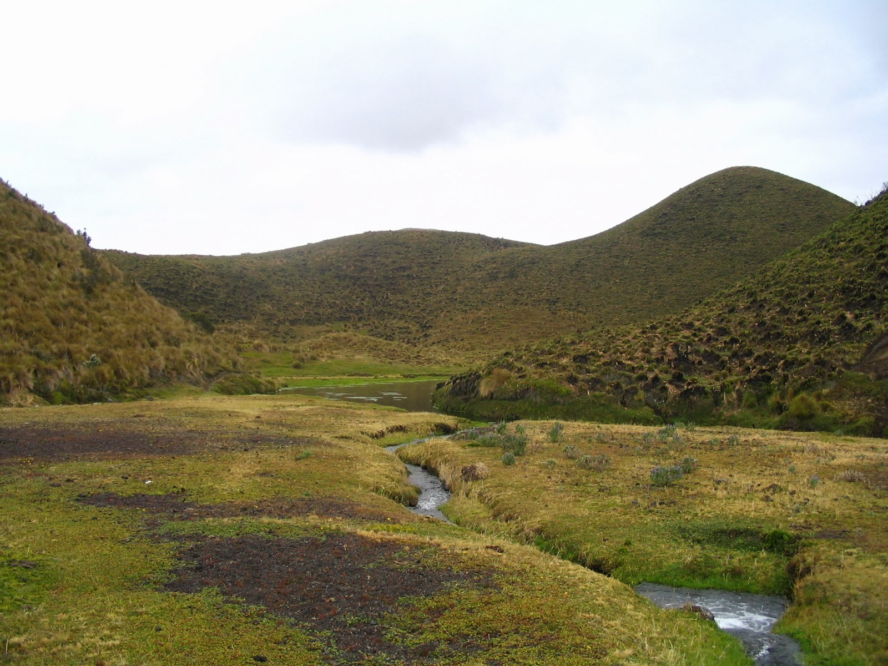

|
Clima Subtropical:
|
El clima subtropical se encuentra en las regiones este y sureste de Paraguay, con veranos calurosos e inviernos suaves.
|
Características:
- Temperaturas:
- Veranos calurosos, inviernos suaves.
- Precipitaciones:
- Lluvias bien distribuidas durante todo el año.
- Estacionalidad:
- Estaciones bien marcadas, con veranos lluviosos e inviernos secos.
- Vegetación:
- Selva subtropical, bosques.
|

|
|
Clima Subtropical de las Sierras:
|
El clima subtropical de las sierras se encuentra en las regiones montañosas del este de Paraguay, con temperaturas más frescas y estaciones secas y húmedas bien definidas.
|
Características:
- Temperaturas:
- Varían según la altitud, con inviernos frescos y veranos templados.
- Precipitaciones:
- Lluvias bien distribuidas durante la estación húmeda.
- Estacionalidad:
- Estaciones secas y lluviosas bien definidas.
- Vegetación:
- Bosque subtropical, biodiversidad vegetal.
|

|